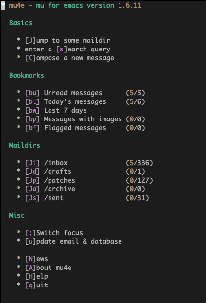
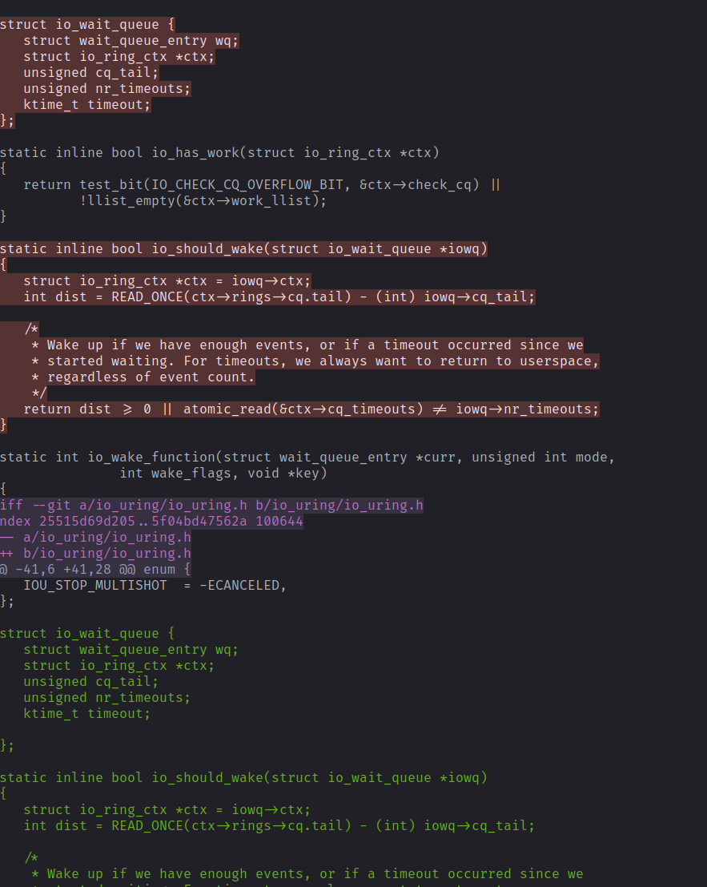

Setting up the kernel development environment - Email

This article describes a possible email setup for your kernel development environment.
Email based development process
The Linux kernel development process is based on emails. Once you have a crafted a patch or a patch series, you sent an email upstream for review. Generally new patches are sent with git send-email. The patches need to be sent as inline text in the body and should have a content type of text/plain. The email requirements are discussed in the kernel doc.
Install packages for email retrieval and email sending
The first step is to install the required Linux packages. To download the emails different programs can be used. This guide uses the mbsync package. To send emails it uses the msmtp package. Both packages need to store the password. To avoid storing the password in plain text, they use the gpg program.
sudo pacman -S msmtp
sudo pacman -S isync
sudo pacman -S gnupgConfigure email settings in git
Add the following setings to your git configuration. Replace firstname and lastname with your name. Make sure to use your real name, so that the patches can be accepted upstream. Make sure you specify your email address correctly. This specifies nvim as the default editor, other settings are certainly possible.
git config --add user.name "Firstname Lastname"
git config --add user.email "your-accoutn@your-domain"
git config --add core.editor "nvim"
git config --add sendemail.from "Firstname Lastname <your-account@your-domain>"
git config --add sendemail.smtpserver /usr/bin/msmtp
git config --add sendemail.signedoffcc false
git config --add sendemail.suppresscc self
git config --add sendemail.suppressfrom true
git config --add sendemail.chainreplyto falseThe git configuration is stored in ~/.gitconfig.
Storing your password
First store your password in a text file like below:
echo "my-password" > mbsync.pwEncrypt the password with the following steps:
gpg --full-generate-key
gpg --encrypt --recipient "your-account@your-domain" mbsync.pw
mv mbsync.pw.gpg .mbsync-pw.gpgAfterwards the unencrypted password file mbsync.pw can be deleted. Only the encoded password is stored in the file ~/.mbsync-pw.gpg.
Create the mail directory
The mbsync program downloads the emails into a directory. By default the directory is called Maildir. Let’s create that directory.
mkdir MaildirConfigure mbsync
The mbsync program is used to retrieve emails. Its default configuration file is stored under ~/.mbsyncrc. This configuration uses the email service fastmail. Other email services like gmail can be used. However it is important to pick an email service provider that doesn’t change (re-format) the content of the body of the email message.
In the below configuration file the Host and User has to be specified. Not all email services need a CertificateFile. In case your emaiil service doesn’t need one, simply remove the corresponding line. The example below is only a simple configuration. The mbsync program also supports setting up configurations with multiple accounts.
CopyArrivalDate yes # Don't mess up message timestamps
Sync All
Create Both # Automatically create near folders in the local copy
Remove Both # Autmatically remove deleted folders from the local copy
Expunge Both # Expunge delete messages locally and remote
IMAPAccount fastmail
Host imap.fastmail.com
Port 993
User your-account@your-domain
PassCmd "gpg --batch -q --for-your-eyes-only --no-tty -d ~/.mbsync-pw.gpg"
SSLType IMAPS
CertificateFile ~/fm.crt
IMAPStore fastmail-remote
Account fastmail
MaildirStore fastmail-local
Path ~/Maildir/
Inbox ~/Maildir/Inbox
SubFolders Verbatim
Channel fastmail
Far :fastmail-remote:
Near :fastmail-local:
Patterns *
SyncState *In case your email service provider requires a certificate file, the file can be created with the following command:
openssl s_client -connect imap.fastmail.com:993 -showcerts 2>&1 < /dev/null > fm.crtOf course this assumes, that the fastmail email service is used. For other email services the domain name needs to be adapted accordingly.
At this point we are able to retrieve the messages with:
mbsync -aThe first time this is executed it will take longer as it will download all the emails. Future invocations will be faster and only download the new emails.
Configure msmtp
Mails are sent with the msmptp program. It is configured by default with the ~/.msmtprc configuration file.
defaults
auth on
tls on
account default
host smtp.fastmail.com
port 465
from your-account@your-domain
auth login
user your-account@your-domain
passwordeval "gpg -q --for-your-eyes-only --no-tty -d ~/.mbsync-pw.gpg"
tls on
tls_certcheck off
tls_starttls off
logfile ~/.msmtp.logIn the above examples the values host and from need to be changed to the valid values for your email service provider. At this point you are able to send and retrieve emails.
Sending and retrieving emails when behind a proxy
In a lot of enterprise environments you don’t have a direct connection to the internet. Instead you are behind a firewall / proxy. If you are not behind a proxy, continue with “Discussing review comments”. In case you are behind a proxy, the socat program can be used. When using the socat program the mbsync and msmtprc configuration needs to be changed. The socat program is used to tunnel the mail retrieval as well as the mail sending.
The following script can be used for this:
#!/bin/bash
socat TCP-LISTEN:13776,fork PROXY:myproxy:smtp.fastmail.com:587,proxyport=8080 &
socat TCP6-LISTEN:13777,fork PROXY:myproxy:imap.fastmail.com:993,proxyport=8080 &In the above script I used the smtp and imap hostnames for the fastmail service. This needs to be changed for your email service provider. It maps thesee services to the ports 13776 amd 13777. In your configuration you need to change these ports if they are already used for exisiting services.
For the .mbsyncrc file the following changes need to be made:
Host localhost
Port 13777This retrieves the emails through port 13777 on the local host. The request gets then proxied to imap.fastmail.com in the above case.
For the .msmtprc file the following changes need to be made:
host 127.0.0.1
port 13776Testing sending of patches
The easiest way to test that everything works is to create a small patch and send it to yourself or a colleague. The following is a potential workflow (assuming you are in your base linux kernel directory):
emacs mm/ksm.c
add a comment and save the file
git commit -m "Some comment change"
git format-patch -1The last command creates a patch file (file extension .patch) in your current directory. You can use this file to send yourself a patch with a command like the following:
git send-email -to your-account@your-domain name-of-the-patch-fileFormatting the patches
The git format-patch command allows to create patch files for more than one patch. Here is a typical command.
git format-patch --base=auto -v 1 -3 --cover-letter -o /some-dir/patch-xyz HEADIt is good practive to specify the base=auto flag. So reviewers can see it is based on which commmit. The -v flag specifies the version of the patch. For the first version of the the patch the flag is not needed. However when updating the patch, the version needs to be specified. The -3 specifies that the top 3 commits should be part of the patch series and a patch file will be created for each commit. The –cover-letter flag is necessary to also create a cover letter template file. This template file needs to be edited before sending out the patch.
Recipients of patches
To determine to whom to send the patches, the get_maintainer.pl script can be used. Its generally sufficient to the mailing list and the key maintainers.
Sending patches and patch series
If you want to send a copy to other recipients or mailing lists they can be added with the -cc switch. More than one -cc switch can be specified.
Patch series contain more than one patch. Instead of a patch file, it specifies a patch directory. Patch series require a so-called cover letter. The cover letter can be specified with –to-cover switch. The cover letter is free form and describes the change.
Here is a typical command:
git send-email --to-cover -to io-uring@vger.kernel.org \
-cc your-accout@your-domain /some-dir/patch-dirInstalling an email client
To discuss review comments email clients are used. It is important that email clients are used that don’t change the email content. Not all email clients can be used for replying to review comments or to reply to the kernel mailing lists. This document describes which email clients can be used and how they need to be configured.
The next sections describes how to configure the mu email client. Why mu? mu automatically indexes the emails and provides some advanced capabilities to search for emails. In addition there is also a very nice integration for emacs which is called mu4e. The advantage is that code can easily be copied from an editor window to an email message. Also the mu4e package provides vim keybindings.
Installing mu
For some Linux distributions mu packages are available. For arch this is not the case and mu needs to be downloaded and built. To be able to build mu the following packages need to be installed:
sudo pacman -S meson
sudo pacman -S gmime3
sudo pacman -S xapian-coreThe next step is to clone the mu repository, build mu and install it.
git clone https://github.com/djcb/mu.git
cd mu
./autogen.sh
make
make installThe website also contains the documentation for the mu package.
Index the mail directory
To use mu, mu needs to index the emails and the user needs to specify the directory where the emails are stored.
mu init --maildir=/home/stefan/Maildir --my-address=your-account@your-domain
mu indexConfigure emacs
The following sections describe the changes to the emacs configuration. Keep in mind that when you use a different email service provider some changes are necessary.
Change init.el file
To be able to use the mu4e emacs integration, the package needs to be first enabled in the list of packages in init.el
:email
;;(mu4e +org +gmail)
mu4e
;;notmuch
;;(wanderlust +gmail)The corresponding section in the file init.el should look like the above
snippet. The easiest way to open the file is to press space-f-p and select
the file init.el. The same key combination can also be used for config.el
and packages.el.
Change packages.el file
In the file packages.el add the following line, so that the package can be found (it was manually installed in the previous step). It also loads the pinentry package so it can read the encrypted password.
(package! pinentry)
(add-to-list 'load-path "/usr/local/share/emacs/site-lisp/mu4e")Change config.el file
Finally configure the package in the file config.el. It firsts starts the pinentry program to be able to read the encrypted password and enables the gpg agent with ssh support. Then it configures how to send the email, and the key folders. The list of folders can easily be changed and extended as needed.
;; Set sendmail properties and use msmtp.
;;
(setq sendmail-program "/usr/bin/msmtp")
(setq send-mail-function 'smtpmail-send-it)
(setq auth-sources '("~/.authinfo" "~/.authinfo.gpg" "~/.netrc"))
(setq smtpmail-smtp-user "<user>@fastmail.us")
(setq smtpmail-default-smtp-server "smtp.fastmail.com")
(setq smtpmail-smtp-server "smtp.fastmail.us")
(setq smtpmail-smtp-service 465)
(setq smtpmail-stream-type 'ssl)
;; Set configuration after loading mu4e
(after! mu4e
(setq mu4e-get-mail-command "true")
(setq mu4e-update-interval 60)
(setq smtpmail-smtp-service 465)
(setq smtpmail-stream-type 'ssl))
;; Set sendmail shortcuts for different folders.
;;
(setq mu4e-maildir-shortcuts
'( (:maildir "/Inbox" :key ?i)
(:maildir "/Drafts" :key ?d)
(:maildir "/Patches" :key ?p)
(:maildir "/Archive" :key ?a)
(:maildir "/Spam" :key ?x)
(:maildir "/Sent" :key ?s)))
;; Map different email folders.
;;
(set-email-account! "shr@devkernel.io"
'((mu4e-sent-folder . "/Sent")
(mu4e-drafts-folder . "/Drafts")
(mu4e-trash-folder . "/Trash")
(mu4e-refile-folder . "/Archive")
(smtpmail-smtp-user . "your-account@your-domain"))
t)
(set-email-account! "your-account"
'((mu4e-sent-folder . "/Sent")
(mu4e-drafts-folder . "/Drafts")
(mu4e-trash-folder . "/Trash")
(mu4e-refile-folder . "/Archive")
t)In case you are behind a proxy, the settings for smtpmail-smtp-server and smtp-mail-smtp-service need to be changed accordingly.
Update the emacs configuration with:
doom syncDownload new mails in the background
To be able to automatically download emails in the background, two systemd user services are defined: a timer service and a mbsync service. Let’s first create the timer service. Create the file mbsync.timer in the directory ~/.config/systemd/user.
[Unit]
Description=Mailbox synchronization timer
[Timer]
OnBootSec=2m
OnUnitActiveSec=1m
Unit=mbsync.service
[Install]
WantedBy=timers.targetNow lets create the file to define the mbsync service. The service definition file is called mbsync.service and is also stored in the directory ~/.config/systemd/user.
[Unit]
Description=Mailbox synchronization service
AssertPathExists=%h/.mbsyncrc
[Service]
Environment=XAUTHORITY=%h/.Xauthority
Environment=DISPLAY=:0
Type=oneshot
ExecStart=/usr/bin/mbsync -a
[Install]
WantedBy=default.targetIn addition also a post script can be defined that creates a desktop notification once new mail arrives. This should be added in the [Service] definition above after the ExecStart clause.
ExecStartPost=%h/mail_notify.shAs an example a very simple script could look like this. The path to icon most likely needs to be adapted on your system.
#!/usr/bin/bash
MAILDIR=~/Maildir/Inbox/new
NEW_MAILS="$(find $MAILDIR -type f | wc -l)"
NEW_MAILS_LAST_UPDATE="$(find $MAILDIR -type f -mmin -2 | wc -l)"
export DISPLAY=:0
if [ $NEW_MAILS_LAST_UPDATE -gt 0 ]
then
/usr/bin/notify-send --icon="/usr/share/plasma/desktoptheme/Dr460nized/icons/mail.svg" \
-a "mbsync" "New mail" "$NEW_MAILS new mails"
fiNow its time to create the new services:
systemctl --user restart mbsync.timer
systemctl --user restart mbsync.service
systemctl --user enable mbsync.timer
systemctl --user enable mbsync.service
systemctl --user daemon-reloadDepending on your linux version you might have to enable an entry in /etc/pinentry/prexec. On Arch Linux I have enabled pinentry-qt:
#!/hint/sh
# Define additional functionality for pinentry. For example
#test -e /usr/lib/libgcr-base-3.so.1 && exec /usr/bin/pinentry-gnome3 "$@"
test -e /usr/lib/libQt5Widgets.so.5 && exec /usr/bin/pinentry-qt "$@"At this point new emails should be downloaded automatically. Once the user logs in, a dialog will be displayed to enter the passphrase. After that the credentials are cached.
Using mu4e
This only gives a very brief overview of mu4e. The documentation does a very
good job of explaining the product. Once emacs is started, the email dashboard
can be opened with space o m. It displays a screen similar to the following one:

New messages can be created and sent by pressing C. Remember that vim key
bindings are enabled. Once you have created the email, it can be sent with the
key combination ctrl-c ctrl-c. To abort sending an email, ctrl-c ctrl-k can be
pressed.
To retrieve the curent list of emails, the J key can be used. This shows
the current list of emails in the selected folder. Emails can be read by pressing
return key. The cursor can be positioned to the next and previous with j and k (so
vim users should feel at home).
If you want to reply to an email, press R. It will ask you if you want to reply
to all users or only the sender. Once the reply has been composed, the email
can be sent with ctrl-c ctrl-c. A reply can be aborted with ctrl-c ctrl-k.
Discussing review comments
When answering to emails use bottom posting. To make it obvious what your message is in response to, your message should be placed underneath the corresponding part in the previous email.
Colorize patches in emails
To make it easier to review patches, it helps to automatically colorize patches: removed lines are displayed in red and new lines are displayed in green. This is an example:

The following line needs to be added to the packages.el file:
(package! message-view-patch :recipe (:host github :repo "seanfarley/message-view-patch"))and the following hook needs to be added to the config.el file:
;; Display diff patches in color.
;;
(use-package! message-view-patch)
(add-hook 'gnus-part-display-hook 'message-view-patch-highlight)Debugging
It is possible that there are problems with sending mails and mu4e. The following two variables can be set to create debugging information:
(setq smtpmail-debug info t)
(setq auth-source-debug t)This will write additional debugging information to the messages buffer of emacs.
Configure msmtp for TLS
Mails are sent with the msmptp program. It is configured by default with the ~/.msmtprc configuration file.
account default
host smtp.fastmail.com
port 587
from your-account@your-domain
auth login
user your-account@your-domain
passwordeval "gpg -q --for-your-eyes-only --no-tty -d ~/.mbsync-pw.gpg"
tls on
tls_certcheck off
tls_starttls on
logfile ~/.msmtp.logIn the above examples the values host and from need to be changed to the valid values for your email service provider. At this point you are able to send and retrieve emails.
Change config.el file for TLS
Finally configure the package in the file config.el. It firsts starts the pinentry program to be able to read the encrypted password and enables the gpg agent with ssh support. Then it configures how to send the email, and the key folders. The list of folders can easily be changed and extended as needed.
;; Set sendmail properties and use msmtp.
;;
(setq sendmail-program "/usr/bin/msmtp"
send-mail-function 'smtpmail-send-it
message-sendmail-f-is-evil t
message-sendmail-extra-arguments '("--read-envelope-from")
message-send-mail-function 'message-send-mail-with-sendmail)
(setq smtpmail-smtp-server "smtp.fastmail.us)
(setq smtpmail-default-smtp-server "smtp.fastmail.com")
(setq smtpmail-smtp-service 587)
(setq smtpmail-stream-type 'starttls)